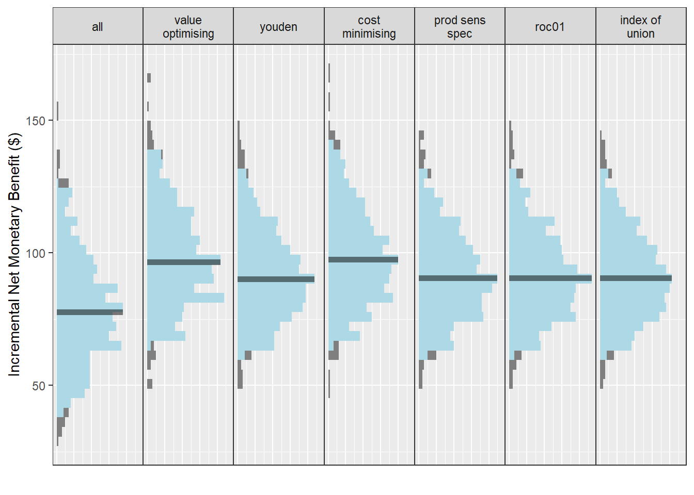
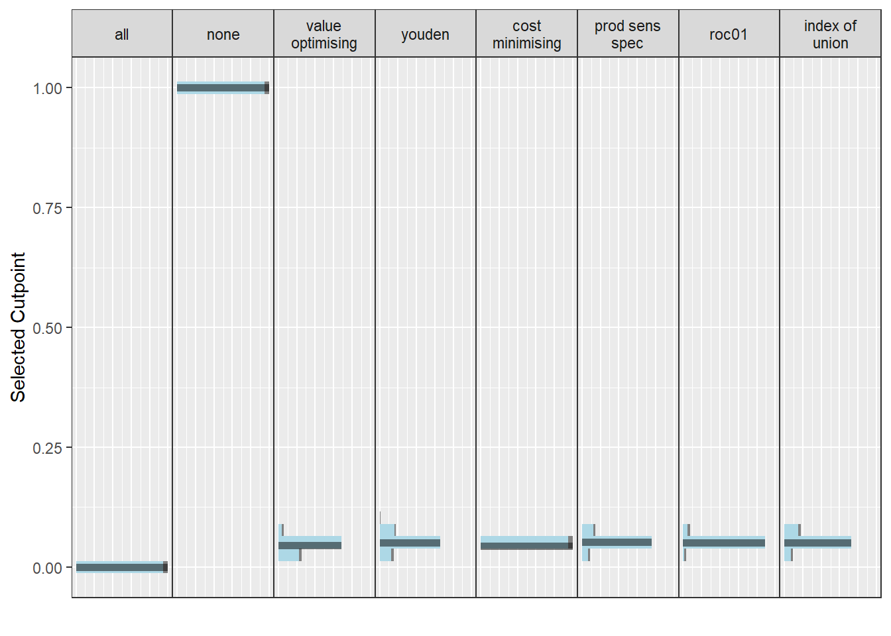

This project is an exploratory study to determine whether ranking patients by predicted risk can yield lower costs and better outcomes than using thresholds. Thresholds, while convenient to implement, may be less cost-effective than ranking given that a ranking system should identify true positives first. Prediction models are capable of generating rich outcome data, but dichotomising into high and low risk does not fully utilise predictions.
A recent consideration with regards to implementing thresholds for risk stratification has been to limit the number of alerts based on what clinicians will tolerate, using the positive predictive value (PPV) to determine number needed to evaluate (NNE). For example, a model with a PPV of 0.1 corresponds to a rate of 1 positive per 10 alerts, or a NNE of 10. This approach can be considered in addition to other, ROC or value-based methods. (Parsons et al. 2023)
This study contrasts the two approaches - if we randomly sample from a study population, what is the economic impact of applying a ranking approach compared to a threshold approach?
Study outline
Determine a use case.
In this study, we will examine the implementation of a program to identify patients at high risk of deterioration leading to additional costs and worse outcomes.
Simulate a hypothetical clinical prediction model with a given AUC and underlying prevalence.
Simulate an underlying patient population using the minimum required sample size.
Obtain costs and outcomes for each state: true positive, true negative, false positive, false negative.
Identify a selection of thresholds based on the study population used to generate the model.
Randomly generate new sample populations based on a range of plausible AUC and prevalence values to mimic external validation.
Apply the threshold obtained from step 5 and the ranking approach, obtaining costs and outcomes for each sample.
Compare NMB across variety of AUCs and prevalence for both ranking and threshold-based methods.
Methods
Let’s assume that, left unassessed, a deteriorating medical inpatient will need to be unexpectedly transferred to the ICU, which incurs significant additional costs. A deterioration detection system can escalate care to an outreach team; false positives can lead to wasted clinician time, and false negatives can lead to costly ICU admissions.
Considering that many patients will require ICU admission regardless of whether they can be successfully intervened with, we should estimate a conservative treatment effect for assessment, rather than assuming an early intervention will necessarily be preventative.
For a model with 30 parameters, an AUC of 0.85 and a prevalence of 0.01, we need a sample size of 13,216 with 133 events. We can use these requirements to generate a hypothetical study population.
Generate simulated dataset
set.seed(888)# Use model specs and minimum sample size to generate a sample populationsample_pop <-get_sample(auc = auc, n_samples = sample_size, prevalence = p0, min_events = min_events)# Obtain predicted probabilitiesfit <-glm(actual ~ x, data = sample_pop, family =binomial() )sample_pop$predicted <-predict(fit, type ="response")
Assign costs and outcomes to 2 x 2 table
Parameters
Additional costs due to deterioration ~𝒩(14134, 686) (Curtis et al. 2021)
QALYs lost from deterioration episode ~𝒩(0.03, 0.04) (Holmes et al. 2024)
Duration of clinical assessment (using MET call time) ~𝚪(110.314, 0.172) (Bellomo et al. 2003)
Note that this was converted to a Gamma distribution based on a mean duration of 19 minutes and a standard error of 18/√99 = 1.809 minutes using ShinyPrior (White and Blythe 2023)
Cost of clinical time per minute based on ICU outreach registrar, the resident medical officer, and the patient’s nurse (Bohingamu Mudiyanselage et al. 2024)
# A tibble: 8 × 3
method median `95% CI`
<chr> <dbl> <chr>
1 all -73.3 -90.3 to -57.3
2 cost minimising -53.0 -72 to -37.8
3 index of union -59.7 -83.2 to -41.4
4 none -151. -202.3 to -111
5 prod sens spec -59.3 -82.1 to -41.8
6 roc01 -59.3 -81.5 to -42.6
7 value optimising -53.6 -72.5 to -38.9
8 youden -59.8 -84 to -41.8
autoplot(nmb_simulation, what ="inb", inb_ref_col ="none") +theme_sim()

autoplot(nmb_simulation, what ="cutpoints") +theme_sim()

Ideas:
Could plot X = number of patients seen, Y = NMB, with a line for each approach. NMB would probably be highest for ranking early on, coming equal with other methods over time. This could then be calculated as a table with cost savings for different limits on X (based on clinicians’ willingness to respond to alerts).
Then, could demonstrate how these plots change based on AUC and p0
What if we try for a non-hospital example - elective surgery wait lists?
Maybe we quantify how much time clinicians can dedicate to this (e.g. 15 alerts max) - see Romero-Brufau approach
Repeat the analysis for a miscalibrated model?
References
Bellomo, Rinaldo, Donna Goldsmith, Shigehiko Uchino, Jonathan Buckmaster, Graeme K Hart, Helen Opdam, William Silvester, Laurie Doolan, and Geoffrey Gutteridge. 2003. “A Prospective Before-and-After Trial of a Medical Emergency Team.”Medical Journal of Australia 179 (6): 283–87. https://doi.org/10.5694/j.1326-5377.2003.tb05548.x.
Bohingamu Mudiyanselage, Shalika, Julie Considine, Alison M. Hutchinson, Imogen Mitchell, Mohammadreza Mohebbi, Jennifer J. Watts, and Tracey K. Bucknall. 2024. “An Economic Evaluation of the Prioritising Responses Of Nurses To Deteriorating Patient Observations (PRONTO) Clinical Trial.”Resuscitation 201 (August): 110272. https://doi.org/10.1016/j.resuscitation.2024.110272.
Curtis, Kate, Prabhu Sivabalan, David S. Bedford, Julie Considine, Alfa D’Amato, Nada Shepherd, Tiana Elphick, Ramon Z. Shaban, and Margaret Fry. 2021. “Treatments Costs Associated with Inpatient Clinical Deterioration.”Resuscitation 166 (September): 49–54. https://doi.org/10.1016/j.resuscitation.2021.07.022.
Escobar, Gabriel J., Vincent X. Liu, Alejandro Schuler, Brian Lawson, John D. Greene, and Patricia Kipnis. 2020. “Automated Identification of Adults at Risk for In-Hospital Clinical Deterioration.”New England Journal of Medicine 383 (20): 1951–60. https://doi.org/10.1056/nejmsa2001090.
Holmes, Emily, Huw Lloyd Williams, Dyfrig Hughes, Elke Naujokat, Bernd Duller, and Christian P. Subbe. 2024. “A Model-Based Cost-Utility Analysis of an Automated Notification System for Deteriorating Patients on General Wards.” Edited by Dominic Luke Thorrington. PLOS ONE 19 (5): e0301643. https://doi.org/10.1371/journal.pone.0301643.
Parsons, Rex, Robin Blythe, Susanna M Cramb, and Steven M McPhail. 2023. “Integrating Economic Considerations into Cutpoint Selection May Help Align Clinical Decision Support Toward Value-Based Healthcare.”Journal of the American Medical Informatics Association 30 (6): 1103–13. https://doi.org/10.1093/jamia/ocad042.
White, Nicole, and Robin Blythe. 2023. “ShinyPrior: A Tool for Estimating Probability Distributions Using Published Evidence.”http://dx.doi.org/10.31219/osf.io/zf62e.